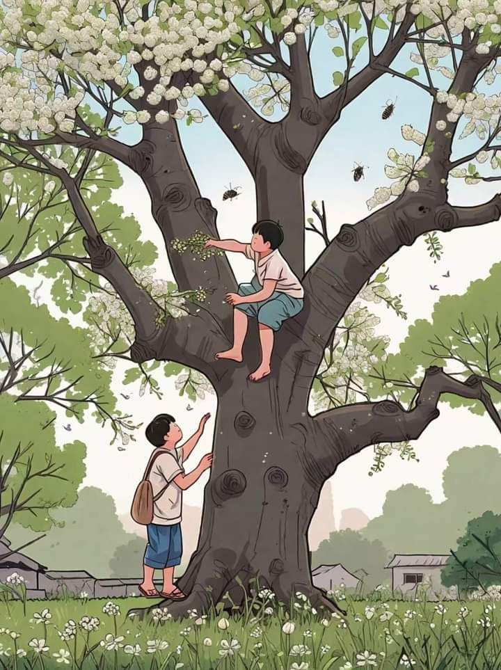

El gran árbol, agradecido por esa compañía, les regalaba sus frutos cada
vez que los niños se los pedían. Sin embargo, la edad comenzaba a pesarle:
cada fruto que entregaba era también el último que su viejo tronco podía dar. Aun así,
nunca se negó. No le importaba quedarse vacío; lo único que deseaba era no sentirse
solo. Así, poco a poco, dio todos los frutos que su vida le permitió ofrecer.
